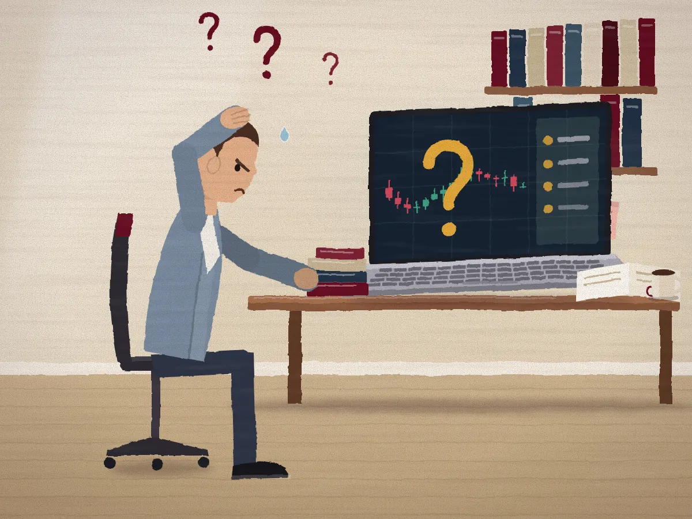
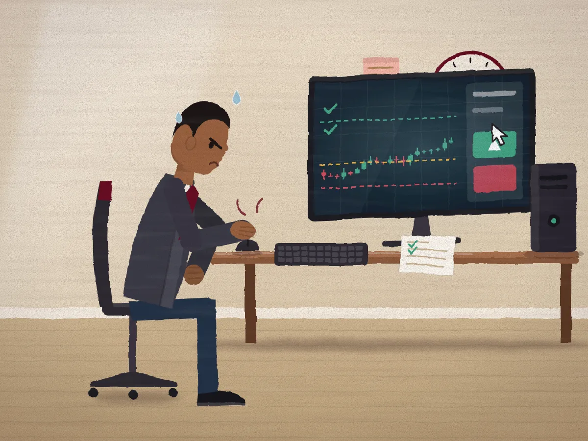
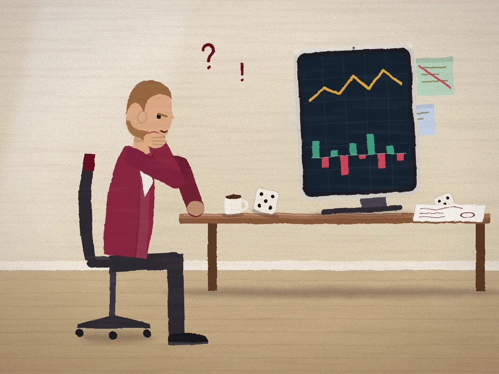

Market Readers
Interpret.
DetailsEach pathway builds one ability: interpretation, execution or capital judgment.

Laptop
Desktop PC
TabletBuild the ability to interpret.
Traders past the beginner stage whose knowledge sits as isolated concepts. Confirmed by the readiness assessment.
Independent reading, less reliance on outside opinions.
Build the ability to decide and execute.
Traders who understand markets but struggle to act when real money is at stake. Confirmed by the readiness assessment.
Process-driven behaviour, with risk set before entry.
Build the ability to allocate and preserve capital.
Experienced participants moving from trades to portfolio-level judgment. Elite pathway, confirmed by assessment and conversation.
Deliberate allocation, aimed at preservation and longevity.
| Attribute | Readers | Operators | Thinkers |
|---|---|---|---|
| Learn to | See | Act | Allocate |
| Ability | Interpret | Decide and execute | Allocate capital |
| Purpose | Independent perception | Consistent live execution | Capital preservation |
| Format | Live learning, practice | Daily live sessions | Strategy and portfolio reviews |
Same method. A different ability each time.